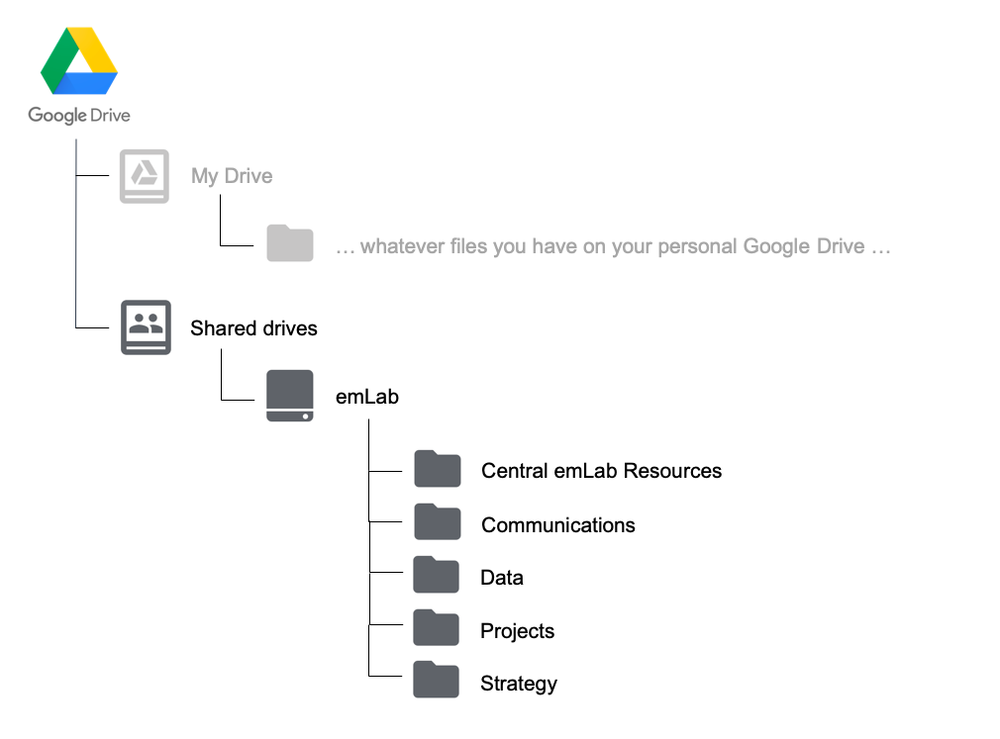

2.2 Shared Drive Files
2.2.1 General Structure

The emLab Shared Drive is organized into five main folders:
Central emLab Resources: includes meeting and event information, onboarding materials, information about travel reimbursements, and the team roster
Communications: includes the blog schedule, Adobe design projects, PowerPoint templates, photo repository, and publication and media tracking
Data: includes the emLab data directory and all datasets we work with (see section 2.2.3 for more on this)
Projects: includes information on past and current projects, and project management guidelines
Strategy
A full table of contents can be seen here.
2.2.2 Project Folder Structure

Each project folder must contain the following 6 folders:
Data: This data folder will contain all of the intermediate datasets as well as output datasets associated with the project (see section 2.2.3 for more on this). Be sure to also add a copy of your final datasets to the
emLab/Datafolder and data directory.Deliverables: final reports, paper manuscripts, other final deliverables not related to data outputs
Grant Reporting: grant reports for funders
Meetings and Events: meeting notes, agendas, documentation for workshop/event planning
Presentations: any presentations created for the project
Project Materials: everything else that does not fit into one of these folders (i.e. drafts of methods, literature review, etc.)
From here, each project can add sub-folders as they see fit within these 6 folders.
2.2.3 Data Storage
As stated above, there are two locations in which data can be stored. The two locations are Google Drive/Shared drives/emLab/Projects/example-project/Data and Google Drive/Shared drives/emLab/Data. This may seem confusing and redundant, but this section explains the differences between these two locations. As a short summary: example-project/Data may contain raw, cleaned, intermediate, and output files for a given project, and will be used as the “workspace” while the project develops. On the other hand, example-project/Data contains only (raw) input and output data from a finalized project. More detail is provided in the subsequent sections.
2.2.3.1 example-project/Data
All data used in a project should live in this project-specific repository. This repository will typically contain subfolders for raw, processed (or clean), and output, although each team might make slight modifications to this structure as it suits their needs.
To illustrate how each of these subfolders might be used, consider the following. A team may receive data from partners, extract data from external sources, compile survey responses, create a new dataset from a literature review, or use results from previous projects as input. These data are termed “raw data”, and should never be directly modified - all of the errors, mistakes, and gremlins should be kept in the original versions. Instead, they should be processed / cleaned, and then exported as “clean data”, that is actually used in analyses. The script used to do the processing / cleaning then acts as a reproducable record of everything that was done to the raw data.
Suppose that a team working in Montserrat is tasked to perform a stock assessment on lobster populations and receives a database of lobster landings from the government. These data are stored as an excel spreadsheet, and will surely contain many mistakes that need to be fixed prior to running anly analyses. The team will clean the data (preferabily, using a reproducible script), and then export a new version of the data in which the mistakes have been fixed. The team will then perform the stock assessment, and produce results before reporting back. Therefore, the project-level data folder could be subdivided into raw, clean, and output folders. The first one will contain the excel file recieved from the government. The second folder will contain the cleaned data (perhaps exported as a csv), which can then be used as input for analyses within this project. The output folder will then contain the stock assessment results that might be relevant to other projects.

As stated above, since the output folder could contain information relevant to other projects, this data should be made available to other emLab projects once the project is complete. To do this, any output data (and raw data if it is not already there) should be moved to the emLab/Data folder, as described below.
2.2.3.2 emLab/Data
As a general rule, this folder contains all data used and produced by emLab projects. The idea is to make it easier for people to find data that has been used in previous projects, as well as to use previous results as inputs for new projects.
To illustrate types of data that should be in the emLab/Data folder, consider the following. The RAM Legacy stock assessment database is key to many projects, and was used as input in the Costello et al. 2016 “upsides” paper. The “upsides database” is an output from the Costello paper, which has then been used as input for other projects. Therefore, the emLab/Data folder contains both the RAM and upsides datasets.
This large central data repository has the potential to become messy. Therefore, it is important to follow some key guidelines to store the data. All datasets in this folder should be contained within their own folders that include at minimum the data and metadata files. For example, a file structure for the two datasets mentioned above might be:

In the above example, the folder containing the upsides database is relatively straightforward with the metadata file and a single csv file. However, the folder containing the RAM database is more complicated as this is a dataset that is re-released every so often as a new version. Specific guidelines for organizing different types of data within the emLab/Data folder are discussed in detail in section 3.